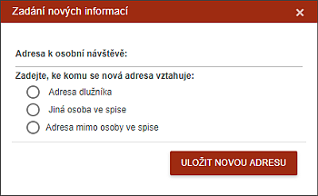
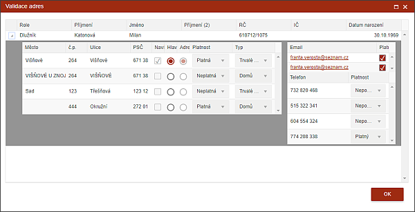

Ukládání a validace adres
V rámci zápisu z osobní návštěvy jsou místa, která se rovnou ukládají do systému bez čekání na uložení celého zápisu. Jedná se hlavně o validaci a vkládání zjištěných adres, telefonů a emailů.

